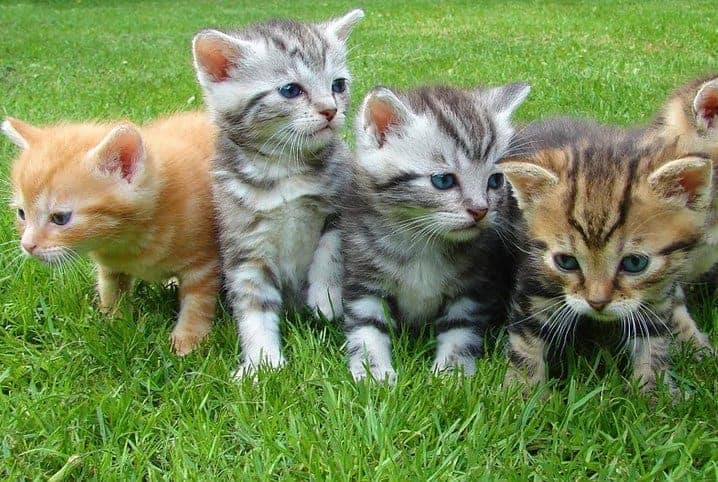
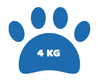
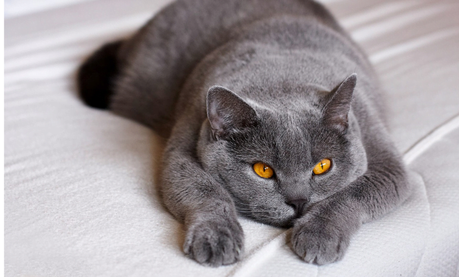
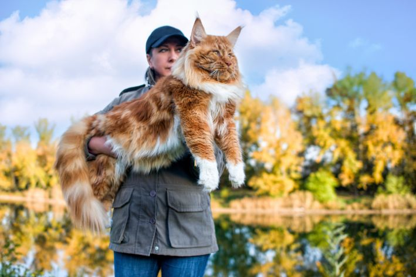
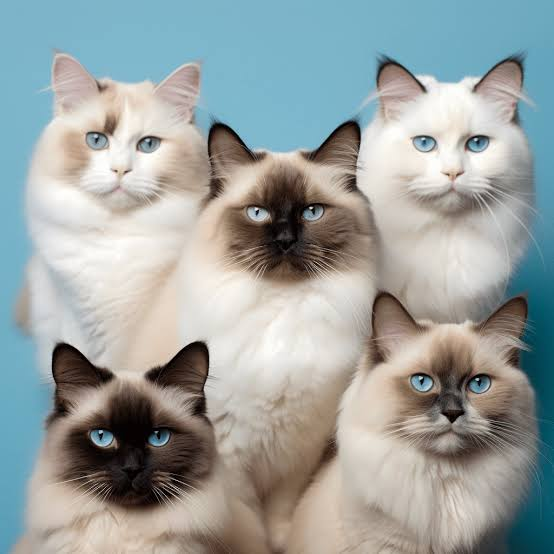

Guia de raças de gatos
Bem-vindo ao Guia de Raças de Gatos Mais Completo da Web!
Descubra o mundo fascinante dos gatos! Com mais de 70 raças reconhecidas mundialmente, selecionamos 51 das mais incríveis para você conhecer.
Explore:
- Raças por tamanho: do menor ao maior
- Raças por cor: de preto a branco e tudo em entre
- Raças por temperamento: do mais brincalhão ao mais relaxado
- Cuidados e dicas práticas: para manter seu gato feliz e saudável
- Saúde e bem-estar: prevenção e cuidados essenciais
Além disso, descubra curiosas histórias sobre a origem das raças e sua domesticação.

Gato vira-lata

Não podiamos deixar de fora eles os bichenos vira-latinhas, trouxemos em primeiro lugar pois esses são os queridinhos!
Um gato vira-lata, também conhecido como gato sem raça definida (SRD);
é um felino que não tem um certificado de linhagem pura, ou seja, é resultado de um cruzamento entre espécies diferentes.
Algumas características de um gato vira-lata são:
No entanto, a personalidade pode variar de acordo com o que foi apresentado para o gato, se foi criado com uma família desde bebê, ou o que já viveu nas ruas.
mas a longevidade depende de vários fatores, como alimentação, cuidados com a saúde, adaptação e ambiente.
É importante lembrar que, apesar de serem mais comuns em abrigos de adoção, nem todo gato que está na rua é um vira-lata. É possível que o animal seja de uma raça específica.
Siamês

Informações Gerais
Bastante carinhoso, o gato Siamês está entre os bichanos mais famosos do mundo. Isso porque sua beleza e postura altiva impressionam os apaixonados por felinos. Além disso, é muito fácil reconhecer o pet dessa raça, afinal, só os siameses possuem porte médio com orelhas altas e bem posicionadas na cabeça. O gato Siamês adora receber a atenção dos tutores e, portanto, não abre mão dos momentos ao lado da sua família humana. E todo o carinho e amor dado aos felinos é recompensado com muita lealdade e diversão. Uma coisa é certa: os tutores de siameses nunca ficam sozinhos!
Condição física
Como um bichano que adora atividades de lazer, o gato Siamês puro raramente fica parado! Ele é extremamente brincalhão e é capaz de se entreter por horas com seu brinquedo preferido. Excelentes saltadores, esses felinos estão sempre preparados para buscar objetos enquanto alguém estiver ali para jogar. Importante na personalidade do gato Siamês, seu porte e altivez impressionam a todos.
Expectativa de vida |
Nível de fofura |
Peso |
Segurança
Bastante valorizados pelo rei de Sião (atual Tailândia),
o gato Siamês era utilizado como vigia nos palácios.
O imperador contava com o bichano posicionado em colunas ao lado do trono dele.
Assim, quando alguma pessoa ameaçasse o monarca, o gato pularia em cima dela para imobilizá-lo.
Aclamados
Queridinho da família real, o gato Siamês era protegido por diferentes membros da realeza de Sião.
Isso porque muitos acreditavam nas lendas sobre o elegante felino ser capaz de herdar suas almas.
Além disso, também confiavam no pet para proteger as joias das princesas do reino.
Astros de cinema
Famosos como só eles, os gatos siameses já estiverem representados em clássicos, como em A Dama e o Vagabundo.
Na trama, a cadela Lady sofre alguns perrengues ao passar alguns dias na casa de dois felinos da raça.
No filme, os nomes deles são Si e Am, como uma referência à origem dos bichanos.
História do gato siamês
Origem
Não se sabe o ano exato em que o gato Siamês surgiu. Isso porque muitas lendas e histórias são conhecidas sobre sua origem.
No entanto, a única certeza é sobre o local do seu nascimento dele, no Império de Sião. Conhecido hoje em dia como Tailândia.
Imigração
O Siamês fez uma longa viagem por diferentes países! No século 19, o rei de Sião enviou ao consulado inglês em Bangkok o casal de bichanos Pho e Mia.
Os filhotes desses siameses foram importados para a Inglaterra em 1884, além de também terem ido para o Norte da Grã-Bretanha, França e Japão.
Exposição
Após chegarem à Inglaterra, levados pelo cônsul inglês Owen Gould, os gatos siameses foram expostos em um concurso de beleza sediado em Londres.O evento aconteceu no icônico Palácio de Cristal, em 1885. Como eram diferentes de qualquer raça da época, esses felinos receberam uma recepção mista.
Raridade
Mesmo estando entre os favoritos dos Monarcas de Sião, o gato Siamês era raro entre os apaixonados por felinos.No entanto, esse cenário mudou logo após a 2ª Guerra Mundial, quando o pet dessa raça se popularizou e se tornou o número um entre os registros de gatos.
Gato de Pelo Curto Inglês

O Gato de pelo curto Inglês, também como British Shorthair ou British Short Cat, é uma das raças mais antigas e populares do mundo e se destaca pela sua aparência robusta,
pelagem densa e olhos grandes e expressivos.
Ele é o famoso “gato da Alice”, personagem do livro e filme Alice no País das Maravilhas, que aparece com uma pelagem azul acinzentada e um sorriso enigmático.
História do Gato de pelo curto Inglês
O Gato de pelo curto Inglês tem origem antiga e incerta. Acredita-se que ele seja descendente dos felinos domésticos que viviam na Roma Antiga e foram levados para a Grã-Bretanha pelos soldados romanos, por volta do século I d.C. Esses gatinhos se adaptaram ao clima frio e úmido da ilha e cruzaram com os gatos nativos, originando uma raça robusta e resistente. Durante a Revolução Industrial, no século XVIII, eles se tornaram populares entre os trabalhadores das fábricas, que os criavam como animais de estimação e para conter a epidemia de ratos. No final do século XIX, eles começaram a ser exibidos em exposições felinas, sendo considerados os primeiros gatos de pedigree da história. Já no século XX, a raça sofreu um declínio devido às duas guerras mundiais, que reduziram drasticamente o número de exemplares. Para evitar a extinção, os criadores recorreram ao cruzamento com outras raças, como o persa, burmês e o chartreux. Esses cruzamentos resultaram em mudanças na aparência e no temperamento do Gato Inglês, que ficou muito mais dócil e variado. Na década de 1950, a raça foi revitalizada e padronizada, recuperando suas características originais. Desde então, o Gato de pelo curto Inglês se tornou uma das raças mais apreciadas e difundidas pelo mundo, especialmente na Europa e na América do Norte.
Pelagem Gato de pelo curto Inglês
A pelagem desta raça de gato é uma das suas características mais marcantes e atraentes. Ela é curta, densa e muito macia. O azul é a cor clássica e mais famosa da raça, porém todas as outras tonalidades são igualmente aceitas e apreciadas. O British Short Hair branco é outra cor muito popular da raça, que pode ser puro ou combinado com outros tons, formando padrões bicolor ou tricolor. O gato preto da raça é uma cor sólida e intensa, que pode ter reflexos azulados ou esverdeados, com uma pelagem uniforme e de cor intensa e linda. Um exemplar da raça extremamente lindo!
Gato pelo curto Inglês gosta de água?
Esses gatinhos não são conhecidos por gostarem de água. No entanto, como todo gato, suas preferências individuais podem variar.
Gato pelo curto Inglês mia muito?
Essa raça tem uma personalidade calma e pacata. Eles não são conhecidos por serem excessivamente vocais.
Peso e tamanho do Gato de pelo curto Inglês
O Gato de Pelo Curto Inglês é uma raça felina de porte médio a grande.
Suas características físicas incluem um corpo robusto: os machos pesam entre 4 kg e 7 kg.
Já as fêmeas tendem a ter um peso entre 3,5 kg e 5,5 kg. Quanto ao tamanho, eles medem entre 56 cm a 64 cm de comprimento.
É preciso estar atento para saber diferenciar um gatinho robusto de um gatinho que está com problema de sobrepeso.
Para manter o seu amigão saudável, é importante controlar o seu peso e evitar a obesidade, que pode trazer vários problemas de saúde, como diabetes, problemas articulares, cardíacos e respiratórios.
Aqui estão algumas dicas para prevenir o sobrepeso e manter seu gato ativo e saudável.
Controle a dieta
Meça a quantidade de ração que você oferece ao seu gatinho, conforme as recomendações do seu veterinário. Não deixe a ração sempre à disposição: ele pode comer mais do que precisa. O ideal é fracionar em duas ou três porções diárias e oferecer em horários regulares. Estimule atividade física
Brincadeiras são exercícios essenciais para o seu peludinho. Estimule o seu bichinho a se exercitar, brincando com ele todos os dias, com bolinhas, ratinhos, varinhas, etc. Providencie também arranhadores, prateleiras, túneis, caixas e outros objetos em que ele possa explorar e se divertir sozinho. Você também pode usar brinquedos interativos que emitem sons, luzes ou movimentos, ou que liberam petiscos. Além disso, você pode brincar com o seu gato, jogando objetos para ele buscar, escondendo petiscos pela casa ou fazendo carinho na barriga dele.Maine Coon

Introdução
O Maine Coon se destaca principalmente por seu corpo.
Afinal, eles estão entre as maiores raças de gatos existentes no mundo.
Não à toa, é conhecido como o “gato gigante”. Apesar disso, não se preocupe! O bichano não costuma dar trabalho, sendo super afetuoso com sua família humana.
Recorde Mundial
O pet dessa espécie tende a atingir o ápice do seu comprimento aos três anos de idade.
No entanto, um exemplar da raça, chamado Omar e que vive na Austrália, surpreendeu a todos ao atingir 1,20 m no auge dos seus quatro anos de vida.
O pet, inclusive, aguarda para quebrar um novo recorde no Guinness Worlds Records.
Tranquilidade
Muito sossegado e quieto, o Maine Coon raramente mia.
A maioria dos pets, na verdade, possui um gorjeio ou som repetitivo bastante suave.
O trinado baixo e suave surpreende os tutores.
Isso porque ele não combina em nada com seu porte gigante e corpo musculoso.
História do Maine Coon
Origem
Pouco se sabe sobre o Maine Coon e sua origem, porém, a raça foi mencionada pela primeira vez na década de 1850, no estado de Maine, nos Estados Unidos. Essa menção fez com que o felino se tornasse um famoso símbolo da região.
Antepassados
Antigamente, era bastante comum que os navios levassem alguns predadores a bordo para ajudar a controlar os roedores. Por isso, acredita-se que os antepassados do Maine Coon tenham vindo de diferentes partes do mundo.
Seleção Natural
De acordo com as informações da Enciclopédia do Gato, da Royal Canin, o Maine Coon surgiu a partir da seleção natural causada pelas condições ambientais do estado de Maine.
Assim, esses gatos se desenvolveram grandes, musculosos e com pelagem densa para sobreviver ao clima frio da Nova Inglaterra.
Cores
Os especialistas da raça reconhecem todas as cores e padrões que possam surgir na pelagem dos felinos. Sendo encontrados Maine Coon amarelo, padrão prateado, preto e, ainda, o mais comum, tabby marrom.
Esse último, no entanto, pode ser adotado nas versões clássico ou cavala.
Persa

Origem do gato Persa
Certamente, o gato Persa é uma das raças mais antigas do mundo. Muitos relatos sobre a raça já existiam nos antigos escritos egípcios, datados de 1684 A.C.! Apesar dos registros históricos, nunca saberemos exatamente qual foi o primeiro felino dessa raça. Mas, o que se sabe até então é que os antigos felinos dessa raça foram criados na Pérsia, onde hoje é o atual território do Irã. Os primeiros gatos de pelo longo a chegar na Europa foram os Persas. Por volta do século 17, Pietro Della Valle, um explorador italiano foi um dos pioneiros na introdução da raça Persa na Itália. A partir disso, essa raça se difundiu rapidamente no continente europeu, tendo muitas mostras de gatos em diversos países, como na França e Inglaterra. Durante o século 19, os criadores europeus, principalmente os ingleses, começaram a aperfeiçoar a raça Persa, selecionando somente aqueles gatos cujas características fossem: cabeças mais arredondadas, orelhas bem menores, narizes curtos, ossos mais pesados, olhos bem grandes e corpo bem cheinho. Todas essas características são comuns a todo gato Persa atualmente. Já no início do século 20, o gatil persa começou a ser exportado para os Estados Unidos, lugar onde a raça se diversificou e se popularizou ainda mais com o aparecimento de cores como o azul e prata naquele período. Hoje em dia, o gato Persa ainda é uma raça felina bastante querida pela sua doçura e pela sua longa e fofa pelagem.
Variações do gato Persa
Apesar de o gato Persa ser uma raça única, ela deu origem a uma outra, que também é extremamente conhecida no mundo felino. Estamos falando do gato Himalaio, que é fruto do cruzamento de gatos Persas e de gatos Siameses, feito nos Estados Unidos, por volta da década de 1930. São muitas semelhanças entre uma raça e a outra: tanto Himalaios quanto Persas possuem uma média de expectativa de vida parecida, o tamanho entre eles é similar e a pelagem de ambos é um grande ponto de destaque.
Pelagem
Um dos pontos de destaque do gato Persa é de fato o seu pelo longo e macio que cobre o seu corpo. Desde a cabeça até o rabo, a pelagem dá um toque suave e solto, como se os Persas fossem feitos de algodão doce. Existem dois tipos de textura para a pelagem do gato Persa, uma delas é do tipo sedoso, cuja característica principal é brilho intenso, que geralmente ocorre nas cores dominantes da raça, vermelho e preto. Por outro lado, a textura mais felpuda ocorre predominantemente nas cores azul e creme e tem uma característica mais fosca em comparação com o primeiro tipo. No entanto, essa raça de felinos não possui somente essas cores. Você pode ter um gato Persa branco, chocolate, lilás, prata, dourado, tortoiseshell, bem como combinação de cores entre azul e creme, além de bicolores e tricolores. Independentemente das opções apresentadas, você deverá ter muito cuidado para fazer a manutenção da pelagem do gato . Veja algumas dicas de como fazer isso logo abaixo e cuide bem do seu felino!
Cuidados com a pelagem do gato Persa
Por ser uma raça de pelo longo, fazer a manutenção da pelagem de um gato Persa tende a ser um desafio. É recomendado que você penteie diariamente o seu pet para que sejam removidos os fios mortos, que, caso se acumulem muito, podem formar grandes bolas de pelo e fazer com que seu gato as engula, o que definitivamente não faz bem e pode causar sérios problemas de saúde. Além disso, a escovação diária será bastante bem vinda para o seu gato, pois os pelos dessa raça costumam a se embaraçar bastante, o que gera muito desconforto para o seu animal. Se você tiver dúvidas sobre como escovar o seu felino, confira um artigo que fizemos sobre esse assunto: Saiba a melhor forma de escovar gato. Banhos uma vez a cada mês também são bastante necessários para a manutenção da pelagem do gato Persa. Quanto mais novo ele for, mais fácil será a sua adaptação à água. No momento da secagem dos pelos, faça isso com uma toalha e, logo depois, penteie os pelos para ajudar nesse processo. Outro ponto interessante é deixar as unhas do seu gato Persa sempre bem aparadas. Cortá-las quinzenalmente ou a cada três semanas com um alicate é o ideal. Como cuidar de um gato Persa? A saúde do gato Persa é bastante satisfatória, tendo uma expectativa de vida em média de 8 a 11 anos. No entanto, para que o seu gato chegue saudavelmente a essas condições, você precisa adotar alguns cuidados básicos, como ir frequentemente a um veterinário de sua confiança. Isso, porque somente esse profissional estará habilitado para checar como anda o estado de saúde do seu felino. Não confie somente no seu instinto de gateiro, diagnóstico preciso só é dado através de um especialista veterinário, quem será importante para analisar problemas comuns dessa raça, tais como dificuldades respiratórias, cardiopatia hipermiotrófica, atrofia progressiva da retina e doença renal policística. Além disso, é importante checar se o seu pet está em dia com a vacinação. Há inúmeras doenças que podem ser evitadas com a aplicação anual de imunizantes. Se você não sabe quais são, veja no tópico seguinte. Vacinação anual Doenças como calcivirose, clamidiose e leucemia felina podem ser, acima de tudo, graves e levar o seu gato Persa a óbito. No entanto, você pode evitá-las através das vacinas polivalentes ou múltiplas, tais como os imunizantes V3, V4 e V5. Além disso, existe a vacina antirrábica, que é importantíssima para a imunização do seu animal contra a raiva, doença super contagiosa e grave para o sistema nervoso central. É muito bom lembrar que vacinar o seu animal é um ato de amor em primeiro lugar. Se você não quer ver o seu gato Persa sofrendo por uma doença pela qual já existe prevenção, não pense duas vezes em levar o seu pet para se imunizar anualmente. Ademais, fazer a vermifugação do seu felino é uma excelente forma para se evitar complicações graves de saúde.
Vermífugos e antipulgas
As ruas são um péssimo lugar para gatos e pets em geral. Isso, porque nesse ambiente é muito comum a proliferação de vermes e pulgas, que são organismos bastante prejudiciais para a saúde de qualquer pet. Se o seu gato Persa é um adulto não-castrado, é melhor ficar de olho! Sintomas como diarreias, dores gastrointestinais, vômitos, náuseas, perda excessiva de pelos e dermatites são muito comuns após o pet entrar em contato com esses organismos maléficos. No entanto, você pode combatê-los e preveni-los através do uso de antipulgas e vermífugos. Apesar disso, não escolha esses produtos sem antes fazer uma consulta com o seu veterinário. Já que, ouvir a opinião de um especialista sobre qual você deveria comprar e como deve aplicar os remédios no seu pet é fundamental para não piorar a saúde do seu gato, pois fazer automedicação no seu animal pode ser um risco. Se quiser se aprofundar um pouco mais, leia nosso artigo sobre vermífugos para cães e gatos. Cuidados com os filhotes de gato Persa Cuidar de filhotes de gato Persa pode ser muito fofo e recompensador no final das contas. Mas, tudo isso exige muito trabalho e dedicação para que eles não se sintam mal e possam crescer tranquilamente. Para que tudo vá conforme o planejado, você precisará introduzi-lo ao universo das vacinações. Geralmente, todo gato a partir de 45 dias de vida já pode começar a se vacinar com a primeira dose dos imunizantes múltiplos V3, V4 e V5. 21 ou 30 dias após a primeira ou última aplicação, já podem ser recebidas as segunda e terceira doses do imunizante. Adiante, quando o seu gato já tiver completado 12 semanas de vida, a aplicação da antirrábica já pode ser feita em dose única no seu gato Persa. Embora exista esse cronograma, todo veterinário é responsável pelo próprio protocolo de vacinação. Assim, não deixe de seguir qualquer orientação que ele lhe passar, pois ela será fundamental para a saúde do seu animal. Além de cuidar do calendário de vacinação, você, como tutor, será responsável também em preparar a sua casa para receber bem o seu mais novo integrante. Ora, você não quer deixar uma má impressão para o seu gato Persa, certo? Bom, para fazer um enriquecimento ambiental impecável, sua casa não pode deixar de ter:
- Bolinhas;
- Caixas de transporte;
- Bebedouros e Comedouros;
- Sachês;
- ração para gato e Petiscos;
- Escovas e Rasqueadeiras;
- Arranhadores para gatos;
- Caixa de areia.
Como alimentar um filhote de gato Persa?
A partir da 4ª semana de vida, o processo de desmame se inicia para todo filhote de gato. É nesse período em que a mãe de gato Persa deixa a sua cria um pouco mais distante dela, fazendo com que o gatinho fique mais independente. Como os dentes de leite do seu filhote ainda não estarão totalmente formados, não é recomendado que ofereça a ração seca para o seu gato. Em seu lugar, dê rações úmidas ou então amoleça a ração seca com água, que também pode ser uma excelente alternativa. Além disso, é recomendado também que não interfira no desmame caso o seu filhote tenha dificuldades de se separar da mãe. A sua atitude pode ser mal vista por ambos, o que pode gerar por parte deles uma reação agressiva a você. Dessa maneira, espere com paciência todo esse processo. Somente na 8ª semana de vida em que o seu filhote de gato Persa estará com os dentes provisórios totalmente desenvolvidos. Assim, você estará permitido para fornecer a ração seca ao pet. Outro ponto importante é sempre dividir a quantidade recomendada da ração em 4 ou 5 vezes. Isso será fundamental para que seu filhote não tenha quadros de hipoglicemia ou coma mais do que o necessário para se manter vivo.
Qual a melhor ração para gato Persa?
A melhor ração para o gato Persa é aquela que fornecerá todos os nutrientes necessários para manter seu metabolismo, seja durante os momentos de repouso, seja durante as brincadeiras. Existe uma gama variada de rações secas, tais como as destinadas aos filhotes, adultos, idosos, castrados, obesos e entre outras. No entanto, para saber escolhê-las com precisão, você deverá levar o seu gato Persa para uma consulta a um veterinário de sua confiança.
Caso você faça a troca de marcas ou do tipo da ração, não faça a transição de maneira muito brusca ou rápida demais para o seu bicho. Isso, porque o seu pet poderá sentir, através disso, sintomas como desarranjos intestinais e desconfortos abdominais durante a troca da ração. Para evitar os efeitos, sempre opte por misturar aos poucos a velha ração com a nova.Temperamento de um gato Persa
O gato Persa possui um temperamento muito tranquilo e, por isso, prefere viver sempre num ambiente onde seja calmo para esse pet. Os felinos dessa raça são uma companhia bastante gentil e agradável para todo tipo de família, independentemente do estilo que esta siga, eles irão se adaptar muito bem. Além disso, os Persas são gatos que convivem muito bem com crianças de qualquer idade e outros pets. Apesar de ser muito companheiro, não imploram tanto por atenção como outras raças felinas. Eles também são muito comunicativos pelo olhar expressivo e pelos miados quase musicais. Outro ponto interessante é o fato de o gato Persa ter atitudes muito repentinas: uma hora ele pode estar muito quieto e, um minuto depois, o felino está com toda a disposição do universo para brincar com você.
Como adestrar um gato Persa?
Por ser uma raça bastante inteligente e sociável, o adestramento não será mal visto pelo gato Persa. Esse pet adorará fazer exercícios com você, já que como falamos anteriormente, ele tem muita energia para gastar apesar da feição de tranquilidade e serenidade. Uma forma positiva de adestramento é ensinar o seu gato comandos como “senta”, “deita” e “desce” sempre com uns petiscos para incentivá-lo. Além disso, essa raça ama brincadeiras interativas como caçar bolinhas ou ratinhos de brinquedo para exercitar a mente.
Quanto custa um filhote de gato Persa?
Um filhote de gato Persa custa em média de R$3000 a R$5000 em gatis confiáveis no Brasil. Não confie em gatos cujos preços são muito abaixo do valor de mercado para uma determinada raça, pois isso pode indicar tanto que o gatil é de baixíssima procedência, quanto o animal não ser da raça que o criador está lhe vendendo. Para evitar qualquer tipo de compra suspeita de raças, veja se o gatil participa de rankings anuais de organizações nacionais ou mundiais em defesa dos felinos, como a FIFe, TICA, CBG e entre outras.
Ragdoll

Gato Ragdoll
O Ragdoll é uma raça cativante conhecida por sua aparência deslumbrante e personalidade dócil. Apelidado de “gigante dócil” ou “ragdoll” por seu temperamento relaxado, esta raça é a favorita entre os amantes de gatos.
Definição de Ragdoll
O Ragdoll é uma raça de gato incrivelmente bela, conhecida por seus impressionantes olhos azuis, pelagem sedosa e disposição gentil. Esta é uma das razões pelas quais é um dos maisraças de gatos populares. A raça foi desenvolvida na Califórnia na década de 1960 por Ann Baker, que criou gatos domésticos com características específicas para criar o Ragdoll. Esta raça é assim chamada porque é conhecida por ficar mole quando segurada, fazendo com que pareça uma boneca de pano macia.
Breve história da raça Ragdoll
A raça de gato Ragdoll foi criada no início dos anos 1960 por Ann Baker, uma criadora que vivia em Riverside, Califórnia. Ela criou gatos com características como tamanho grande, personalidade dócil e cores desejáveis para criar esse novo tipo de gato que ela chamou de “Ragdolls”. Os primeiros ragdolls foram criados a partir de uma fêmea branca do tipo Persa-Angorá chamada Josephine. Josephine produziu gatinhos com temperamentos excepcionalmente dóceis e esses gatinhos se tornaram o estoque de base para a raça ragdoll. O programa de criação original começou com Josephine e envolveu criação seletiva entre sua prole (que possuía seu temperamento dócil) e outras raças, incluindo gatos birmaneses, birmaneses e persas para produzir características físicas específicas, como tamanho grande, olhos azuis e cores/padrões diferentes em seus pelos. Apesar de ser reconhecida como uma raça estabelecida há mais de trinta anos. A composição genética exata por trás de suas características de assinatura ainda é incerta, embora os padrões de criação de hoje sejam destinados a preservar essas qualidades desejáveis
Popularidade e reconhecimento de Ragdoll
Nos últimos anos, a popularidade dos gatos Ragdoll cresceu consideravelmente devido à sua natureza gentil, tornando-os animais de estimação afetuosos populares entre as famílias. Eles são criaturas afetuosas que adoram a atenção de seus donos, mas também se sentem confortáveis em serem deixados sozinhos por longos períodos durante o dia. Agora, há muitos grupos dedicados exclusivamente à criação, exibição e promoção da raça. Em 1993, o Ragdoll foi reconhecido pela The International Cat Association (TICA) como uma raça campeã. Hoje, é uma das raças de gatos mais populares do mundo, classificando-se entre as dez principais raças registradas pela TICA a cada ano. A popularidade dos Ragdolls inspirou muitos donos a participar de exibições de seus gatos em exposições de gatos em todo o mundo. Isso levou a uma compreensão muito melhor de seu comportamento e requisitos, bem como levou a um maior desenvolvimento de programas de reprodução seletiva para manter essas características desejáveis que os tornaram tão populares hoje. No geral, os gatos Ragdoll continuam sendo uma raça amada por seus traços de personalidade charmosos e bela aparência. Sua popularidade só parece destinada a aumentar com mais donos descobrindo suas qualidades únicas e selecionando-os como animais de estimação amigáveis à família.
Características físicas
Tamanho e peso
A raça Ragdoll é conhecida por seu grande tamanho, frequentemente chamada de “gigante gentil”. O peso médio de um Ragdoll macho adulto é entre 12-20 libras, enquanto as fêmeas geralmente pesam entre 8-15 libras. Eles têm um corpo longo com ombros e quadris largos. Suas pernas são de comprimento médio e robustas, terminando em grandes patas redondas com tufos de pelo entre os dedos.
Tipo de pelagem, cor e padrões
Ragdolls têm uma pelagem semi-longa que é macia e sedosa ao toque. Eles vêm em várias cores, incluindo seal point, blue point, chocolate point, lilac point, red point, cream point, tortie point e lynx point. Os padrões de cores da pelagem são divididos em três categorias: pontudo (mais escuro no rosto), mitted (patas brancas) e bicolor (V invertido branco no rosto). Cada padrão de cor também tem variações diferentes com base na quantidade de branco em sua pelagem.
Apontado:
O padrão pontudo tem pelo mais escuro nas orelhas, cauda, rosto e pernas. Há quatro cores principais: seal (marrom escuro), blue (azul-acinzentado), chocolate (marrom claro) e lilac (cinza cremoso claro).
Luva:
O padrão mitted é semelhante ao padrão pontudo, mas tem luvas ou meias brancas nos pés, bem como queixo e peito brancos.
Bicolor:
Em contraste com esses dois padrões está o bicolor que tem mais pelo branco do que pelo colorido. Esse padrão de pelagem pode ser dividido em três subcategorias: high-mitted que apresenta pontos coloridos junto com luvas se estendendo em direção aos jarretes; mid-mitted onde há mais branco do que cor em todos os pontos; e low-mitted onde a coloração branca é restrita apenas às patas.
Cardiomiopatia hipertrófica (CMH)
HCM é uma doença cardíaca comum em gatos, especialmente em raças como Ragdolls. É causada pelo espessamento do músculo cardíaco, o que pode levar à má circulação sanguínea e até mesmo à morte súbita. Infelizmente, HCM pode ser difícil de diagnosticar precocemente porque geralmente não há sintomas até que a doença tenha progredido. Se você tem um gato Ragdoll, é importante agendar check-ups regulares com seu veterinário e fazer um exame do coração do seu gato para HCM usando um ecocardiograma. Se seu gato for diagnosticado com HCM, as opções de tratamento incluem medicamentos e cirurgia.
Requisitos de preparação
Os gatos Ragdoll têm uma pelagem de comprimento médio que requer cuidados regulares para manter sua textura macia e sedosa e evitar emaranhados. Eles perdem pelo moderadamente ao longo do ano, com períodos de queda mais intensa na primavera e no outono. Para manter a pelagem com a melhor aparência, os donos devem escovar seus gatos Ragdoll pelo menos duas vezes por semana com uma escova ou pente de alta qualidade. Durante as estações de queda, a escovação diária pode ser necessária para evitar que pelos soltos se acumulem em móveis e roupas. Preste atenção especial às áreas onde os nós são prováveis de se formar, como atrás das orelhas e sob as pernas. Se os nós ocorrerem, eles podem ser removidos delicadamente com um divisor de nós ou tesouras projetadas para tosa de animais de estimação. Além da escovação, os gatos Ragdoll precisam de cortes de unhas e limpezas de orelhas regulares. As unhas devem ser aparadas a cada duas ou três semanas para evitar que fiquem muito longas e causem desconforto ou danos quando seu gato arranhar. A limpeza das orelhas pode ser feita uma vez por semana usando uma bola de algodão macia ou umedecida em água morna ou uma solução aprovada para limpeza de orelhas.
Informações sobre criação e adoção
Padrões de criação para Ragdolls
A raça de gato Ragdoll é uma raça de gato grande, musculosa e de pelo semilongo que é conhecida por sua natureza dócil, comportamento afetuoso e atitude brincalhona. Os criadores aderem a padrões de criação específicos para manter a integridade da raça. Um dos fatores críticos considerados na criação de Ragdolls é a cor, o padrão e o tipo de pelagem. Os quatro padrões principais são colorpointed, mitted, bicolor e lynx. Esses gatos vêm em seis cores: seal point, blue point, chocolate point, lilac point, red or flame point e cream or apricot points. Outro fator essencial na criação é garantir que eles não carreguem nenhuma doença genética como cardiomiopatia hipertrófica (HCM), que pode ser herdada dos pais. HCM é uma doença cardíaca que pode levar à insuficiência cardíaca se não for diagnosticada. Os padrões de reprodução também exigem práticas de reprodução responsáveis, como acasalar apenas gatos com bom temperamento e excelente saúde física. Além disso, é essencial aumentar a diversidade genética não reproduzindo continuamente gatos intimamente relacionados.
Processo de adoção de Ragdolls
Adotar um gato ragdoll requer consideração cuidadosa por causa de seus traços de personalidade únicos e necessidades de cuidados. Antes de adotar um desses gatos em sua família ou como um animal de exposição, você deve fazer sua pesquisa sobre o que possuir esta raça envolve. Existem várias maneiras de adotar um gato ragdoll, como de criadores respeitáveis ou por meio de organizações de resgate. Criadores respeitáveis fornecerão toda a documentação necessária para verificar o estado de saúde do gatinho, incluindo registros de vacinação que terão sido administrados com base em recomendações veterinárias. Organizações de resgate oferecem serviços de adoção onde você pode encontrar gatos ragdoll que precisam de lares definitivos devido a vários motivos, como divórcio ou restrições financeiras enfrentadas por antigos donos, levando-os a doar seus amados animais de estimação. Em ambos os casos, é essencial garantir que você esteja adquirindo um gato saudável e bem ajustado. Se possível, é recomendado conhecer o gato antes da adoção para avaliar sua personalidade, temperamento e comportamento. Além disso, peça referências de adotantes anteriores ou donos de animais de estimação que tenham experiência com a raça. No geral, adotar e ter um gato ragdoll requer paciência, amor e comprometimento. Esses gatos são excelentes animais de estimação ou de exposição por causa de sua natureza dócil e comportamento afetuoso. É importante seguir padrões de criação responsáveis ao considerar adicionar um gato ragdoll à sua casa.